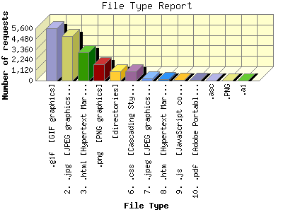

Report generated by Analog 5.91beta1 and Report Magic 2.21
|
Web Server Statistics for "Harish Narayanan (hnarayan) - February 2004" Report generated by Analog 5.91beta1 and Report Magic 2.21 |
The File Type Report identifies the type of information that is requested from the web site. GIF and JPG are the two types of graphic (image) files that are most commonly supported by web browsers. HTML (sometimes abbreviated HTM), ASP, and [directories] all represent actual pages. The number of image requests will almost always outnumber page requests as one page may contain several images.
This report shows all results. This report is sorted by number of requests.

| File Type | Number of requests | Number of bytes transferred | Percentage of the bytes | Percentage of the requests | |
|---|---|---|---|---|---|
| 1. | .gif [GIF graphics] | 5,579 | 5.153 MB | 2.81% | 31.52% |
| 2. | .jpg [JPEG graphics] | 4,763 | 38.928 MB | 21.23% | 26.91% |
| 3. | .html [Hypertext Markup Language] | 3,046 | 50.817 MB | 27.71% | 17.21% |
| 4. | .png [PNG graphics] | 1,735 | 36.969 MB | 20.16% | 9.80% |
| 5. | [directories] | 1,014 | 11.677 MB | 6.37% | 5.73% |
| 6. | .css [Cascading Style Sheets] | 1,009 | 1.471 MB | 0.80% | 5.70% |
| 7. | .jpeg [JPEG graphics] | 229 | 3.544 MB | 1.93% | 1.29% |
| 8. | .htm [Hypertext Markup Language] | 137 | 14.309 MB | 7.80% | 0.77% |
| 9. | .js [JavaScript code] | 108 | 93.208 KB | 0.05% | 0.61% |
| 10. | .pdf [Adobe Portable Document Format] | 45 | 12.149 MB | 6.62% | 0.25% |
| 11. | .asc | 14 | 30.583 KB | 0.02% | 0.08% |
| 12. | .PNG | 12 | 125.444 KB | 0.07% | 0.07% |
| 13. | .ai | 7 | 8.144 MB | 4.44% | 0.04% |
This report was generated on August 5, 2004 15:43.
Report time frame February 1, 2004 00:16 to February 29, 2004 22:49.
| Web statistics report produced by: | |
 Analog 5.91beta1 Analog 5.91beta1 |  Report Magic 2.21 Report Magic 2.21 |